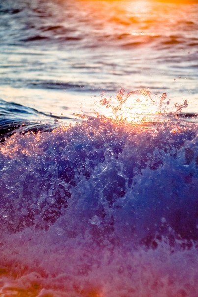

Організми та значення води для них: біологія життя
Вода — це єдина речовина, що присутня в усіх відомих формах життя без винятку. Від найпростішої бактерії до найскладнішого людського мозку — все живе збудоване навколо води. Без неї життя в тому вигляді, в якому ми його знаємо, було б просто неможливе.
Фундаментальні ролі води в живих організмах
Вода не просто «заповнює простір» усередині клітини, вона виконує низку критично важливих функцій:
- Універсальний розчинник. Більшість поживних речовин, вітамінів і мінералів транспортуються в організмі лише в розчиненому стані. Без води клітини б просто «голодували».
- Транспортна система. Кров, лімфа та інші рідини переносять кисень і поживні речовини до органів, а продукти розпаду — до нирок і легенів для виведення.
- Терморегуляція. Завдяки високій теплоємності вода захищає організми від перегріву (через потовиділення) та переохолодження.
- Середовище для біохімічних реакцій. Усі ферментативні процеси, синтез білків і копіювання ДНК відбуваються виключно у водному середовищі.
Як якість води впливає на здоров'я організму?
Оскільки вода є базовим компонентом усіх процесів, будь-яке її забруднення викликає «ефект доміно» в організмі:
- Токсичний вплив. Важкі метали та хлор можуть пошкоджувати мембрани клітин і порушувати роботу мітохондрій (енергетичних станцій клітини).
- Порушення осмотичного тиску. Надлишок солей жорсткості може призвести до того, що вода виходитиме з клітин, спричиняючи їх «стиснення» та порушення функцій.
- Забруднення середовища. Бактерії у воді можуть викликати системне запалення, що особливо небезпечно для людей зі слабким імунітетом.
Шлях до гармонії: чиста вода для кожного
Організм людини — це найскладніша біологічна машина, якій потрібне високоякісне «пальне». Використання професійно очищеної води дає змогу підтримувати всі системи організму в оптимальному стані, забезпечуючи довголіття та здоров'я.
Подаруйте своєму організму ідеальне середовище для життя
Чиста вода — це інвестиція у ваше здоров'я, яка окупається щодня. Замовляйте доставку очищеної води в Бровари та Київ від Crystal Water.
Замовити воду для здоров'я